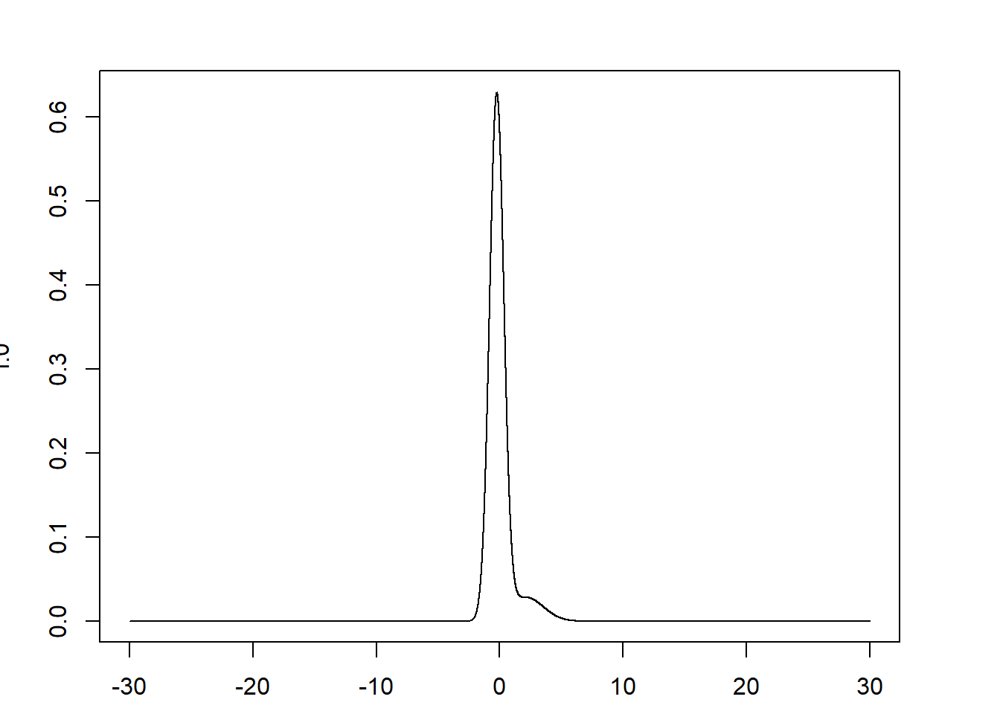
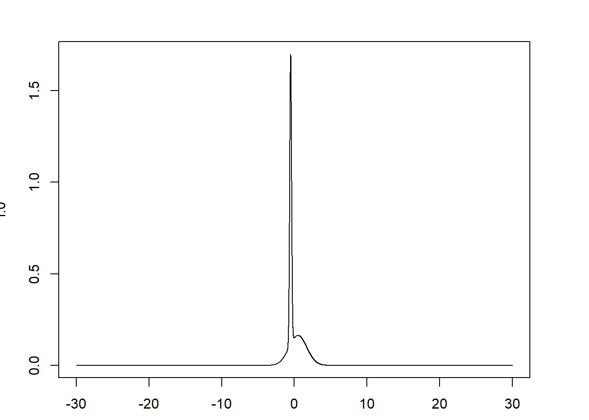
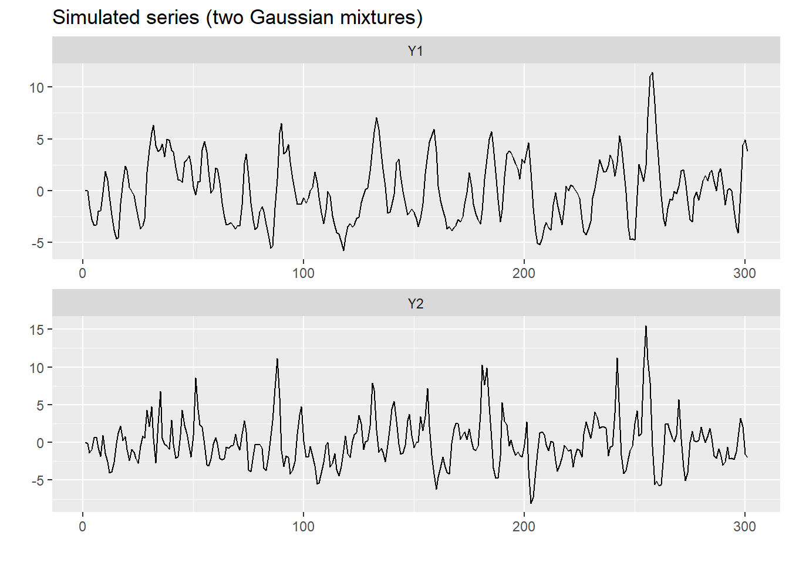
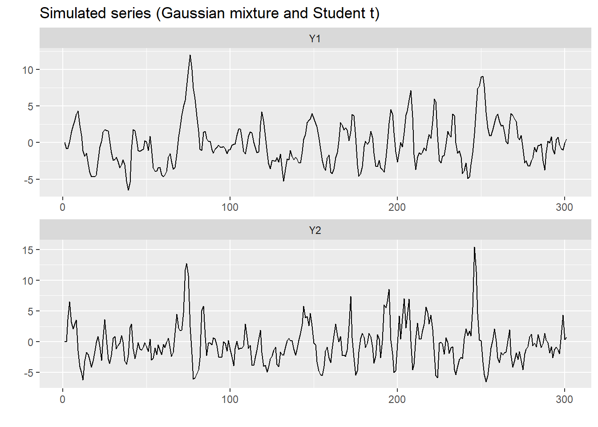
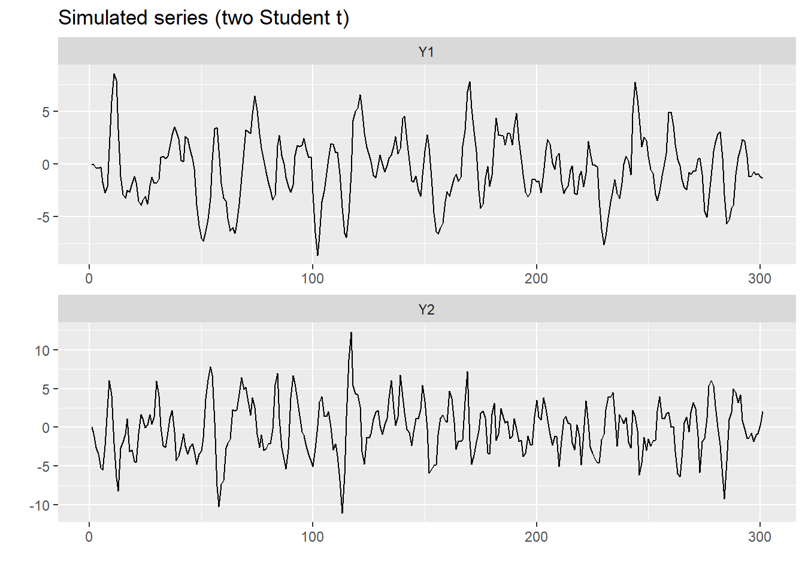

Section 3 SVARMA(1,1) example
We now follow the procedure from GMR2019 to simulate a (stationary) structural VARMA process. We will then use both the maximum-likelihood and the two-step 2SLS-GMM procedure proposed by the authors to estimate the model and compare the results with the true values. The process we simulate is the following bivariate SVARMA(1,1): \[ y_t = \Phi_1 y_{t-1} + C\eta_t + \Theta C\eta_{t-1}, \]
where \(C\) is the mixing matrix and \(\eta_t\) are the independent and non-Gaussian structural shocks of the process. The extensive form of the system is the following: \[ \begin{cases} y_{1t} = \phi_{11} y_{1t-1} + \phi_{12} y_{2t-1} + c_{11} \eta_{1t} + c_{12} \eta_{2t} + (\theta_{11} c_{11} + \theta_{12} c_{21}) \eta_{1t-1} + (\theta_{11} c_{12} + \theta_{12} c_{22}) \eta_{2t-1} \\ y_{2t} = \phi_{21} y_{1t-1} + \phi_{22} y_{2t-1} + c_{21} \eta_{1t} + c_{22} \eta_{2t} + (\theta_{21} c_{11} + \theta_{22} c_{21}) \eta_{1t-1} + (\theta_{21} c_{12} + \theta_{22} c_{22}) \eta_{2t-1} \end{cases} \] We can see that the moving average structure of the system greatly increase the complexity of the model with respect to a standard SVAR(1) process. In particular, the system reacts not only to contemporaneous shocks but also to past shocks in both variables. The entity of the reaction is described by \(\Theta\), which must be identified together with the mixing matrix \(C\).
In a nutshell, the problem of non-fundamentalness mainly consists on the inadequacy of standard estimation techniques when a coefficient \(\theta_{ij}\) is greater than one in modulus. This can actually be e frequent case in practice, since it means that some shocks may have a lagged impact and unfold their effects after one or more periods.
Below, I adapt the code provided by GMR2019 to show a minimal practical example of their estimation technique using simulated data.
3.1 Simulation
To illustrate the method and evaluate its performances, we simulate different processes characterized by different distributions of the structural shocks.
In particular, we will draw the shocks from three different combinations: two Gaussian mixtures; one Gaussian mixture and one Student t; two Student t. We will show that the method is imprecise when the distribution of one of the shocks is a Student t with many degrees of freedom, because this is similar to the Gaussian case and identification based on higher order moments fails. On the contrary, a precise estimation is achieved when the shocks are distributed as Gaussian mixtures, since the moments higher than the second are distant in the (true) non-fundamental process and its fundamental representation.
For the purposes of the simulation study, we have to generate shocks whose distribution has skewness and kurtosis that are set in advance. To this end, we have to choose the parameters of the distribution which are consistent with the chosen skewness and kurtosis. This passage requires a bit of algebraic manipulations in the case of the mixture Gaussian distribution. Consider the following p.d.f. of a Gaussian mixture:
\[ g(\mu_1, \mu_2, \sigma_1, \sigma_2, p) = p \ N(\mu_1, \sigma_1) + (1-p) \ \ N(\mu_2, \sigma_2) \]
where \(N(\mu_i, \sigma_i) = \frac{1}{\sigma_i \sqrt{2\pi}} \exp\left[-\frac{1}{2}\left(\frac{x-\mu_i}{\sigma_i}\right)^2\right]\) denotes the p.d.f. of the Normal distribution. We want to fix the third and fourth cumulants of the distribution and compute the parameters \(\mu_1, \mu_2, \sigma_1, \sigma_2\) accordingly.
Let \(X \sim g(\mu_1, \mu_2, \sigma_1, \sigma_2, p)\), with \(X_1 \sim N(\mu_1, \sigma_1), \ X_2 \sim N(\mu_2, \sigma_2)\). We impose: \[ \begin{align} E[X] &= 0 \\ E[X^2] &= 1 \\ E[X^3] &= \kappa_3 \\ E[X^4] &= \kappa_4 \end{align} \] We also know that \[ \begin{align} E[X_i] &= \mu_i \\ E[X_i^2] &= \sigma_i^2+\mu_i^2 \\ E[X_i^3] &= \mu_i^3 + 3\mu_i\sigma_i^2 \\ E[X_i^4] &= \mu_i^4 + 6\mu_i^2\sigma_i^2 + 3\sigma_i^4 \end{align} \] and \[ E[h(X)] = p E[h(X_1)] + (1-p)E[h(X_2)] \] From the previous expressions we get: \[ \begin{align} p \mu_1 + (1-p) \mu_2 &= 0 \implies \mu_2 = -\frac{p}{1-p} \mu_1 \\ p (\sigma_1^2 + \mu_1^2) + (1-p) (\sigma_2^2 + \mu_2^2) &= 1 \implies \sigma_2^2 = \frac{1}{1-p}\left(1 - p\sigma_1^2 - \frac{p}{1-p}\mu_1^2\right) \\ p(\mu_1^3 + 3\mu_1\sigma_1^2) + (1-p)(\mu_2^3 + 3\mu_2\sigma_2^2) &= \kappa_3\implies \sigma_1^2 = \frac{1-p}{3p \mu_1} \left[\kappa_3 - \frac{p(1+p)}{(1-p)^2} \mu_1^3 + \frac{3p\mu_1}{1-p}\right] \end{align} \tag{3.1} \] We are left to find a parameter \(\mu_1\) consistent with \(\kappa_3, \kappa_4\). To this end, in the simulation we proceed as follows:
- Initialize e vector of \(\tilde{\mu}_1\) in regular intervals of (-30, 30)
- For each value in \(\tilde{\mu}_1\), compute the corresponding \(\tilde{\mu}_2, \tilde{\sigma}_1, \tilde{\sigma}_2\) using the formulas in Eq. (3.1).
- For each of the resulting Gaussian mixture \(g(\tilde{\mu}_1, \tilde{\mu}_2, \tilde{\sigma}_2, \tilde{\sigma}_2)\), compute the kurtosis \[ \tilde{\kappa}_4(\tilde{\mu}_1) = p(\tilde\mu_i^4 + 6\tilde\mu_i^2\tilde\sigma_i^2 + 3\tilde\sigma_i^4) + (1-p)(\tilde\mu_i^4 + 6\tilde\mu_i^2\tilde\sigma_i^2 + 3\tilde\sigma_i^4) \]
- Choose the \(\mu_1\) that minimizes the distance from the desired \(\kappa_4\): \[ \mu_1 = \arg \min_{\tilde{\mu_1}} [\tilde{\kappa}_4(\tilde{\mu}_1) - \kappa_4]^2 \]
Moreover, in their code, GMR2019 introduce a different parametrization of the Gaussian mixture, that is in one-to-one relation with the original one but is computationally more stable for their algorithm. It uses three parameters for each distribution that are trigonometric transformations of the original parameters.
## Run relevant packages
library(optimx) # Optimization for maximum likelihood
library(vars)## Loading required package: MASS## Loading required package: strucchange## Loading required package: zoo##
## Attaching package: 'zoo'## The following objects are masked from 'package:base':
##
## as.Date, as.Date.numeric## Loading required package: sandwich## Loading required package: urca## Loading required package: lmtestlibrary(doParallel) # Parallel computing for long executions## Loading required package: foreach## Loading required package: iterators## Loading required package: parallellibrary(compiler)
library(stringr)##
## Attaching package: 'stringr'## The following object is masked from 'package:strucchange':
##
## boundarylibrary(Matrix)
library(tidyverse)## -- Attaching packages --------------------------------------- tidyverse 1.3.0 --## v ggplot2 3.3.2 v purrr 0.3.4
## v tibble 3.0.3 v dplyr 1.0.3
## v tidyr 1.1.2 v forcats 0.4.0
## v readr 1.4.0## -- Conflicts ------------------------------------------ tidyverse_conflicts() --
## x purrr::accumulate() masks foreach::accumulate()
## x stringr::boundary() masks strucchange::boundary()
## x tidyr::expand() masks Matrix::expand()
## x dplyr::filter() masks stats::filter()
## x dplyr::lag() masks stats::lag()
## x tidyr::pack() masks Matrix::pack()
## x dplyr::select() masks MASS::select()
## x tidyr::unpack() masks Matrix::unpack()
## x purrr::when() masks foreach::when()library(ggplot2)
## Set working directory
setwd("C:/Users/Alessandro Ciancetta/Documents/Universita/UniPi/V/TesiEconomics/Papers SSVARMA/Gourieroux2019-Supplementary_2021/Rcodes_2021")
## Load the code by GMR2019
source("various_prog/set.of.procedures.R")As a first step, we define the length of the sample an its dimensionality.
T <- 300 # Sample size
n <- 2 # Number of variablesWe now set the model parameters and the initial values of the simulation.
## Model parameters
p <- 1 # number of lags
Phi <- array(0,c(n,n,p)) # AR coefficients
Phi[1,1,1] <- .8
Phi[1,2,1] <- .3
Phi[2,1,1] <- -.3
Phi[2,2,1] <- .5
q <- 1 # MA order
Theta <- array(NaN,c(n,n,q)) # MA coefficients (non-fundamental)
Theta[,,1] <- diag(c(-.5,-2))
Theta[1,2,1] <- 0
Theta[2,1,1] <- 1
Mu <- rep(0,n) # intercept (null)
C <- diag(n) # mixing matrix
C[1,1] <- 0
C[2,1] <- 1
C[1,2] <- 1
C[2,2] <- 0.5
## Initial values for the simulation
Y0 <- rep(0,n*p)
eta0 <- rep(0,q * n)In the next three sections, we set up three different combinations for the distribution of the shocks.
3.1.1 Two Gaussian mixtures
We begin by specifying the model for the case where both the shocks are distributed as Gaussian mixtures.
## Shock 1 distribution
p.1 <- .1 # mixing probability
kappa.3_1 <- 2 # third cumulant
kappa.4_1 <- 6 # fourth cumulant
## Change in parameters used for GMM estimation
kappa.3.modif <- c(kappa.3_1)
kappa.4.modif <- c(2 + kappa.4_1 - kappa.3_1^2)
## Baseline and alternative parametrization of the Gaussian (for computational convenience)
param.mixture.1 <- get.Gaussian.mixture.from.kappa(kappa.3_1,kappa.4_1,p.1)
## [1] "Variance of distri.:1"
## [1] "kappa_3 of distri.:2"
## [1] "kappa_4 of distri.:5.9998955175277"param.distri.1 <- make.theta1.2.3(p.1,param.mixture.1$mu.1,param.mixture.1$sigma.1)## Shock 2 distribution
p.2 <- .5
kappa.3_2 <- 1.1
kappa.4_2 <- 1.5
## Change in parameters used for GMM estimation
kappa.3.modif <- c(kappa.3.modif,kappa.3_2)
kappa.4.modif <- c(kappa.4.modif,2 + kappa.4_2 - kappa.3_2^2)
## Baseline and alternative parametrization of the Gaussian (for computational convenience)
param.mixture.2 <- get.Gaussian.mixture.from.kappa(kappa.3_2,kappa.4_2,p.2)
## [1] "Variance of distri.:1"
## [1] "kappa_3 of distri.:1.1"
## [1] "kappa_4 of distri.:1.5003007769495"param.distri.2 <- make.theta1.2.3(p.2,param.mixture.2$mu.1,param.mixture.2$sigma.1)## Summarize the distribution of the shocks in a unique object
distri_mixt2 <- list(type=c("mixt.gaussian","mixt.gaussian"),
mu=c(param.mixture.1$mu.1,param.mixture.2$mu.1),
sigma=c(param.mixture.1$sigma.1,param.mixture.2$sigma.1),
p=c(p.1, p.2),
df=c(NaN,NaN))
## Create an object Model
Model_mixt2 <- list(
Mu = Mu,
Phi = Phi,
Theta = Theta,
C = C,
distri = distri_mixt2
)The function simul.VARMA simulates the SVARMA process using the given parameters and initial values. The shocks are generated according to the distributions specified in the object Model_mixt2$distri.
res_mixt2 <- simul.VARMA(Model_mixt2,
nb.sim = T+1,
Y0,eta0)
Y_mixt2 <- t(res_mixt2$Y)[,1:n]
data_sim <- tibble(date = 1:nrow(Y_mixt2), Y1 = Y_mixt2[,1], Y2 = Y_mixt2[,2]) %>%
pivot_longer(-date, names_to = "factor", values_to = "value") %>%
mutate(factor = fct_relevel(factor, names(Y_mixt2)))
data_sim %>%
ggplot(aes(x = date, y = value)) +
geom_line() +
facet_wrap(vars(factor), nrow = ncol(Y_mixt2), dir = "v", scales = "free") +
labs(title = "Simulated series (two Gaussian mixtures)",
y = "", x= "") 
We also set the initial values for the estimation procedures of the next sections.
## GMM estimation
## Specify the moments
u <- rbind(c(2,0),c(0,2),c(1,0),c(2,0),c(1,0),c(2,0),c(0,1),c(0,2),c(0,1),c(0,2))
v <- rbind(c(0,0),c(0,0),c(2,0),c(1,0),c(0,2),c(0,1),c(0,2),c(0,1),c(2,0),c(1,0))
## Specify the initial values as the true values + randomness
param.ini.0_mixt2 <- c(Model_mixt2$C,Model_mixt2$Theta,kappa.3.modif,kappa.4.modif)
# add randomness:
param.ini.GMM_mixt2 <- param.ini.0_mixt2 * (1 + .2 * rnorm(length(param.ini.0_mixt2)))## MLE Estimation
## Set initial values (true values+randomness),
## including the parameters of the distribution of the shocks.
param.ini.0_mixt2 <- c(Model_mixt2$Phi,
Model_mixt2$Theta,
Model_mixt2$C,
param.distri.1$theta1,param.distri.2$theta1,
param.distri.1$theta2,param.distri.2$theta2,
param.distri.1$theta3,param.distri.2$theta3)
# add randomness
param.ini.MLE_mixt2 <- param.ini.0_mixt2 * (1 + .2 * rnorm(length(param.ini.0_mixt2)))
param.ini.MLE_mixt2[abs(param.ini.MLE_mixt2)>10^8] <- 0.013.1.2 Gaussian mixture and t-student
## Summarize the distribution of the shocks in a unique object
distri_mixt_t <- list(type=c("mixt.gaussian","student"),
mu=c(param.mixture.1$mu.1,NaN),
sigma=c(param.mixture.1$sigma.1,NaN),
p=c(p.1, NaN),
df=c(NaN,6))
## Collect the parameters in the object Model
Model_mixt_t <- list(
Mu = Mu,
Phi = Phi,
Theta = Theta,
C = C,
distri = distri_mixt_t
)
## Simulate the process
res_mixt_t <- simul.VARMA(Model_mixt_t,
nb.sim = T+1,
Y0,eta0)
Y_mixt_t <- t(res_mixt_t$Y)[,1:n]
data_sim <- tibble(date = 1:nrow(Y_mixt_t), Y1 = Y_mixt_t[,1], Y2 = Y_mixt_t[,2]) %>%
pivot_longer(-date, names_to = "factor", values_to = "value") %>%
mutate(factor = fct_relevel(factor, names(Y_mixt_t)))
data_sim %>%
ggplot(aes(x = date, y = value)) +
geom_line() +
facet_wrap(vars(factor), nrow = ncol(Y_mixt_t), dir = "v", scales = "free") +
labs(title = "Simulated series (Gaussian mixture and Student t)",
y = "", x= "") 
## GMM estimation
## Specify the moments
u <- rbind(c(2,0),c(0,2),c(1,0),c(2,0),c(1,0),c(2,0),c(0,1),c(0,2),c(0,1),c(0,2))
v <- rbind(c(0,0),c(0,0),c(2,0),c(1,0),c(0,2),c(0,1),c(0,2),c(0,1),c(2,0),c(1,0))
## Specify the initial values as the true values + randomness
param.ini.0_mixt_t <- c(Model_mixt_t$C,Model_mixt_t$Theta,kappa.3.modif,kappa.4.modif)
# add randomness:
param.ini.GMM_mixt_t <- param.ini.0_mixt_t * (1 + .2 * rnorm(length(param.ini.0_mixt_t)))## MLE Estimation
## Set initial values (true values+randomness),
## including the parameters of the distribution of the shocks.
param.ini.0_mixt_t <- c(Model_mixt_t$Phi,
Model_mixt_t$Theta,
Model_mixt_t$C,
param.distri.1$theta1,param.distri.2$theta1,
param.distri.1$theta2,param.distri.2$theta2,
param.distri.1$theta3,param.distri.2$theta3)
# add randomness
param.ini.MLE_mixt_t <- param.ini.0_mixt_t * (1 + .2 * rnorm(length(param.ini.0_mixt_t)))
param.ini.MLE_mixt_t[abs(param.ini.MLE_mixt_t)>10^8] <- 0.013.1.3 Two t-student
## Two t-student distributions
distri_t2 <- list(type=c("student","student"),
mu=c(NaN,NaN),
sigma=c(NaN,NaN),
p=c(NaN, NaN),
df=c(6,6))
## Collect the parameters in the object Model
Model_t2 <- list(
Mu = Mu,
Phi = Phi,
Theta = Theta,
C = C,
distri = distri_t2
)
## Simulate the process
res_t2 <- simul.VARMA(Model_t2,
nb.sim = T+1,
Y0,eta0)
Y_t2 <- t(res_t2$Y)[,1:n]
data_sim <- tibble(date = 1:nrow(Y_t2), Y1 = Y_t2[,1], Y2 = Y_t2[,2]) %>%
pivot_longer(-date, names_to = "factor", values_to = "value") %>%
mutate(factor = fct_relevel(factor, names(Y_t2)))
data_sim %>%
ggplot(aes(x = date, y = value)) +
geom_line() +
facet_wrap(vars(factor), nrow = ncol(Y_t2), dir = "v", scales = "free") +
labs(title = "Simulated series (two Student t)",
y = "", x= "") 
## GMM estimation
## Specify the moments
u <- rbind(c(2,0),c(0,2),c(1,0),c(2,0),c(1,0),c(2,0),c(0,1),c(0,2),c(0,1),c(0,2))
v <- rbind(c(0,0),c(0,0),c(2,0),c(1,0),c(0,2),c(0,1),c(0,2),c(0,1),c(2,0),c(1,0))
## Specify the initial values as the true values + randomness
param.ini.0_t2 <- c(Model_t2$C,Model_t2$Theta,kappa.3.modif,kappa.4.modif)
# add randomness:
param.ini.GMM_t2 <- param.ini.0_t2 * (1 + .2 * rnorm(length(param.ini.0_t2)))## MLE Estimation
## Set initial values (true values+randomness),
## including the parameters of the distribution of the shocks.
param.ini.0_t2 <- c(Model_t2$Phi,
Model_t2$Theta,
Model_t2$C,
param.distri.1$theta1,param.distri.2$theta1,
param.distri.1$theta2,param.distri.2$theta2,
param.distri.1$theta3,param.distri.2$theta3)
# add randomness
param.ini.MLE_t2 <- param.ini.0_t2 * (1 + .2 * rnorm(length(param.ini.0_t2)))
param.ini.MLE_t2[abs(param.ini.MLE_t2)>10^8] <- 0.013.2 Estimation
The estimation of the parameters requires many computations and requires a bit of execution time. Since we need to repeat each estimation procedure one time for each of the three combinations of the distributions of the shocks, it is particularly convenient (and simple) to use parallel computing. The next two chunks of code compute the 2SLS-GMM and the ML estimator for the three processes.
Notice that in the ML estimation we assume that the actual distributions of the shocks is unknown and we use the p.d.f. of a Gaussian mixtures in all of the three cases. This condition better approximates the practical case where the true distribution is unknown. Therefore, the estimation method is more precisely a pseudo maximum likelihood approach. The choice of the Gaussian mixture depends on its parsimony (in terms of number of parameters) and flexibility. Indeed, it admits bimodality and can attain any possible combination of skewness and kurtosis such that \(\text{kurtosis} \geq \text{skewness}^2 +1\).
## Preliminary settings for the optimization algorithm
nb.loops <- 2
MAXIT.nlminb <- 300
MAXIT.NlMd <- 1000
indic.Blaschke <- 1 # Consider Blaschke transformations of Theta after initial estimation
nb.loops.BM <- 2
MAXIT.nlminb.BM <- 300
MAXIT.NlMd.BM <- 1000
indic.solve.C <- 1 # override inapprorpriate C matrix (during optimization)## GMM estimator
data_list <- list(Y_mixt2, Y_mixt_t, Y_t2)
initial_list <- list(param.ini.GMM_mixt2, param.ini.GMM_mixt_t, param.ini.GMM_t2)
cl <- parallel::makeCluster(3)
doParallel::registerDoParallel(cl)
results_GMM <- foreach(i = 1:length(data_list), .packages='optimx') %dopar%{
estim.VARMAp1.2SLS.GMM(data_list[[i]], u, v,
nb.iterations.gmm = 2,
maxitNM = 2000,
indic.Blaschke = 1, # after the first estimation, transform Theta # via Blaschke matrices to get new starting values
# for different regimes of fundamentalness
indic.print=0,
lag.NW=2, # number of lags used in the Newey-West approach
# used to compute standard deviations of parameter estimates
indic.estim.phi=1, # estimate also the AR coefficients
indic.constant = 0, # determines if the model includes a constant
indic.3rd.4th.order.moments=1, # both 3rd-order and 4th-order moments are used in the GMM
# if indic.3rd.4th.order.moments==3, then use only third-order moments
# if indic.3rd.4th.order.moments ==4, then use only 4th-order moments
param.ini=initial_list[[i]], # specify initial values
p = p,
addit.IV=3
)
}
parallel::stopCluster(cl)
names(results_GMM) <- c("mixt2", "mixt_t", "t2")## Maximum likelihood estimator
data_list <- list(Y_mixt2, Y_mixt_t, Y_t2)
models_list <- list(Model_mixt2, Model_mixt_t, Model_t2)
initial_list <- list(param.ini.MLE_mixt2, param.ini.MLE_mixt_t, param.ini.MLE_t2)
cl <- parallel::makeCluster(3)
doParallel::registerDoParallel(cl)
results_ML <- foreach(i = 1:length(data_list), .packages=c('optimx', 'Matrix')) %dopar%{
estim.MA.inversion(initial_list[[i]],
models_list[[i]],
data_list[[i]],
MAXIT.nlminb = MAXIT.nlminb, # max iterations for nlminb optimization
MAXIT.NlMd = MAXIT.NlMd, # max iterations in Nelder-Mead optimization
nb.loops = nb.loops,
indic.Blaschke = 1, # Transform Theta to get different non-fund regimes
MAXIT.nlminb.BM = MAXIT.nlminb, # max iter of nlminb after Blaschke transformations
MAXIT.NlMd.BM = MAXIT.NlMd, # max iter in Nelder-Mead after Blaschke transformations
nb.loops.BM = nb.loops.BM,
indic.print=0, # print
indic.compute.cov.mat=1 # compute covariance matrix of parameter estimates
)
}
parallel::stopCluster(cl)
names(results_ML) <- c("mixt2", "mixt_t", "t2")3.3 Results
Below, we report three tables that summarise the results.
## Print results in kables
library(knitr)## Warning: package 'knitr' was built under R version 3.6.2Parameters <- c("$\\Phi_{11}$", "$\\Phi_{21}$", "$\\Phi_{12}$", "$\\Phi_{22}$",
"$\\Theta_{11}$", "$\\Theta_{21}$", "$\\Theta_{12}$", "$\\Theta_{22}$",
"$C_{11}$", "$C_{21}$", "$C_{12}$", "$C_{22}$")3.3.1 Two Gaussian Mixtures
True <- c(Model_mixt2$Phi, Model_mixt2$Theta, Model_mixt2$C)
GMM <- c(results_GMM$mixt2$Phi.est, results_GMM$mixt2$Theta.est, results_GMM$mixt2$C0.est)
GMM.stdev <- c(sqrt(diag(results_GMM$mixt2$Asympt$Var.alpha.hat)),
sqrt(diag(results_GMM$mixt2$Asympt$Var.beta.hat)[5:8]),
sqrt(diag(results_GMM$mixt2$Asympt$Var.beta.hat)[1:4]))
MLE <- c(results_ML$mixt2$Phi, results_ML$mixt2$Theta, results_ML$mixt2$C)
MLE.stdv <- sqrt(diag(results_ML$mixt2$MV)[1:12])
tibble(Parameters, True,GMM,GMM.stdev,MLE,MLE.stdv) %>%
mutate_if(is.numeric, format, digits=3) %>%
kable(caption = "Estimates of the parameters. The structural shocks are both distributed as Gaussian mixtures")| Parameters | True | GMM | GMM.stdev | MLE | MLE.stdv |
|---|---|---|---|---|---|
| \(\Phi_{11}\) | 0.8 | 0.7874 | 0.0352 | 0.7942 | 0.00661 |
| \(\Phi_{21}\) | -0.3 | -0.2639 | 0.0653 | -0.3198 | 0.03229 |
| \(\Phi_{12}\) | 0.3 | 0.3453 | 0.0439 | 0.2931 | 0.00689 |
| \(\Phi_{22}\) | 0.5 | 0.5667 | 0.0839 | 0.5209 | 0.02970 |
| \(\Theta_{11}\) | -0.5 | -0.4166 | 0.1248 | -0.5048 | 0.01798 |
| \(\Theta_{21}\) | 1.0 | 0.3032 | 3.2928 | 0.9425 | 0.14850 |
| \(\Theta_{12}\) | 0.0 | -0.0960 | 1.3531 | 0.0184 | 0.01583 |
| \(\Theta_{22}\) | -2.0 | -2.6837 | 1.0324 | -2.0761 | 0.13627 |
| \(C_{11}\) | 0.0 | -0.0296 | 0.0675 | -0.0226 | 0.01339 |
| \(C_{21}\) | 1.0 | -0.5974 | 0.2431 | 0.9123 | 0.08143 |
| \(C_{12}\) | 1.0 | 0.9291 | 0.0741 | 0.9555 | 0.04064 |
| \(C_{22}\) | 0.5 | 0.0155 | 1.1746 | 0.4202 | 0.07429 |
3.3.2 Gaussian mixtures and t-student
True <- c(Model_mixt_t$Phi, Model_mixt_t$Theta, Model_mixt_t$C)
GMM <- c(results_GMM$mixt_t$Phi.est, results_GMM$mixt_t$Theta.est, results_GMM$mixt_t$C0.est)
GMM.stdev <- c(sqrt(diag(results_GMM$mixt_t$Asympt$Var.alpha.hat)),
sqrt(diag(results_GMM$mixt_t$Asympt$Var.beta.hat)[5:8]),
sqrt(diag(results_GMM$mixt_t$Asympt$Var.beta.hat)[1:4]))
MLE <- c(results_ML$mixt_t$Phi, results_ML$mixt_t$Theta, results_ML$mixt_t$C)
MLE.stdv <- sqrt(diag(results_ML$mixt_t$MV)[1:12])
tibble(Parameters, True,GMM,GMM.stdev,MLE,MLE.stdv) %>%
mutate_if(is.numeric, format, digits=3) %>%
kable(caption = "Estimates of the parameters. Shock 1 is distributed as a Gaussian mixture, Shock 2 is distributed as a Student-t")| Parameters | True | GMM | GMM.stdev | MLE | MLE.stdv |
|---|---|---|---|---|---|
| \(\Phi_{11}\) | 0.8 | 0.79387 | 0.0443 | 0.80571 | 0.0249 |
| \(\Phi_{21}\) | -0.3 | -0.21871 | 0.0803 | -0.28341 | 0.0360 |
| \(\Phi_{12}\) | 0.3 | 0.30281 | 0.0368 | 0.27944 | 0.0204 |
| \(\Phi_{22}\) | 0.5 | 0.60563 | 0.0690 | 0.48775 | 0.0340 |
| \(\Theta_{11}\) | -0.5 | -0.32365 | 0.2307 | -0.42512 | 0.0549 |
| \(\Theta_{21}\) | 1.0 | 1.83036 | 0.7210 | 0.96220 | 0.1600 |
| \(\Theta_{12}\) | 0.0 | 0.00764 | 0.3047 | -0.05963 | 0.0570 |
| \(\Theta_{22}\) | -2.0 | -2.28968 | 0.6047 | -1.92401 | 0.1336 |
| \(C_{11}\) | 0.0 | -0.08657 | 0.0925 | -0.00305 | 0.0649 |
| \(C_{21}\) | 1.0 | 0.63183 | 0.1317 | 1.04883 | 0.0924 |
| \(C_{12}\) | 1.0 | 0.84969 | 0.0434 | 0.94151 | 0.0518 |
| \(C_{22}\) | 0.5 | 0.64782 | 0.3537 | 0.42375 | 0.0864 |
3.3.3 Two t-student
True <- c(Model_t2$Phi, Model_t2$Theta, Model_t2$C)
GMM <- c(results_GMM$t2$Phi.est, results_GMM$t2$Theta.est, results_GMM$t2$C0.est)
GMM.stdev <- c(sqrt(diag(results_GMM$t2$Asympt$Var.alpha.hat)),
sqrt(diag(results_GMM$t2$Asympt$Var.beta.hat)[5:8]),
sqrt(diag(results_GMM$t2$Asympt$Var.beta.hat)[1:4]))
MLE <- c(results_ML$t2$Phi, results_ML$t2$Theta, results_ML$t2$C)
MLE.stdv <- sqrt(diag(results_ML$t2$MV)[1:12])
tibble(Parameters, True,GMM,GMM.stdev,MLE,MLE.stdv) %>%
mutate_if(is.numeric, format, digits=3) %>%
kable(caption = "Estimates of the parameters. The structural shocks are both distributed as mixture Gaussians.")| Parameters | True | GMM | GMM.stdev | MLE | MLE.stdv |
|---|---|---|---|---|---|
| \(\Phi_{11}\) | 0.8 | 0.808 | 0.0374 | 0.8207 | 0.0153 |
| \(\Phi_{21}\) | -0.3 | -0.392 | 0.0653 | -0.3749 | 0.0405 |
| \(\Phi_{12}\) | 0.3 | 0.315 | 0.0400 | 0.3154 | 0.0121 |
| \(\Phi_{22}\) | 0.5 | 0.537 | 0.0608 | 0.5730 | 0.0399 |
| \(\Theta_{11}\) | -0.5 | -2.179 | 0.5948 | -0.5994 | 0.0149 |
| \(\Theta_{21}\) | 1.0 | -1.594 | 0.8446 | 0.8510 | 0.0826 |
| \(\Theta_{12}\) | 0.0 | -0.583 | 0.2113 | 0.0463 | 0.0138 |
| \(\Theta_{22}\) | -2.0 | -1.855 | 0.4369 | -1.5144 | 0.0667 |
| \(C_{11}\) | 0.0 | 0.289 | 0.0962 | -0.4091 | 0.0277 |
| \(C_{21}\) | 1.0 | 0.473 | 0.1664 | 0.8530 | 0.0692 |
| \(C_{12}\) | 1.0 | 0.406 | 0.1054 | 0.9764 | 0.0500 |
| \(C_{22}\) | 0.5 | -0.973 | 0.2613 | 1.0192 | 0.0815 |
As we can see, the GMM estimator approximates the true value of the distribution only when the distribution of the shocks are sufficiently different from the Gaussian case. However, the 2SLS-GMM estimator is significantly less precise in all the three cases. For this reason, in practice, GMR2019 suggest to use this estimator to choose the initial values of the (pseudo) maximum likelihood procedure. The latter estimator is indeed more efficient and, in our example, performs sufficiently well in estimating the parameters, also in presence of non-fundamentalness. However, the case of two Student t distribution leads to unstable estimates, i.e. the estimated values and fundamentalness regimes can change substantially in different random simulations of the model. On the contrary, the estimates are stable in the other two cases.